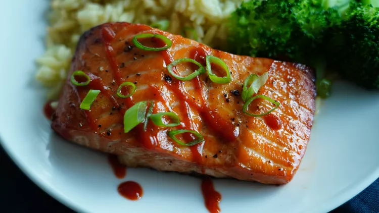

Air-Fried Bang Bang Salmon

Description
Easy, fast, and tasty! These tender, air-fried salmon fillets are full of subtly sweet and spicy flavor. Serve with rice and a green vegetable for the perfect healthy dinner.
Ingredients
- ⅓ cup mayonnaise
- 3 tablespoons sweet chili sauce
- 1 tablespoon Sriracha sauce
- 4 (5 ounce) salmon fillets
- cooking spray
- 1 tablespoon thinly sliced green onion, or to taste
Steps
- Preheat an air fryer to 400 degrees F (200 degrees C).
- Prepare sauce by whisking mayonnaise, chili sauce, and Sriracha together in a small bowl until well blended.
- Spread 1 tablespoon sauce over the top of each salmon fillet. Reserve remaining sauce for serving.
- Lightly coat the air fryer basket with cooking spray. Place fillets in the air fryer basket with the sauce facing up.
- Air-fry until salmon flakes easily with a fork, about 10 minutes
- To serve, drizzle salmon with extra sauce and sprinkle green onion over top.